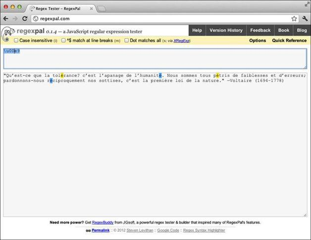
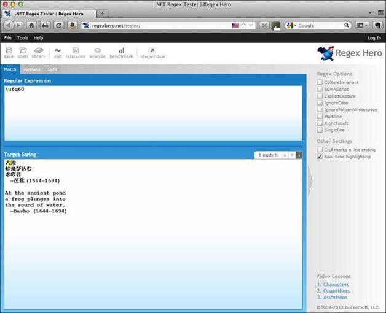
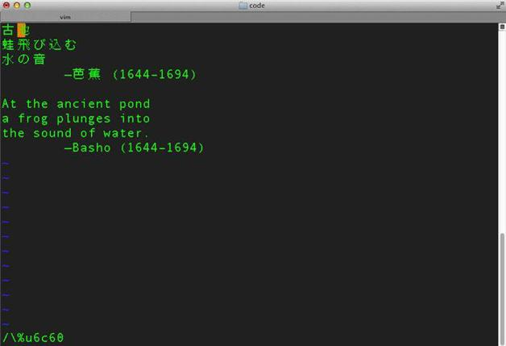

6.1 匹配Unicode字符
有很多方式可以指定Unicode字符（也称为代码点）。为了讲解方便，本书将Unicode字符看做ASCII字符范围以外的字符，但严格说来这并不准确。
先将伏尔泰的名言输入到Regexpal（http://www.regexpal.com）中，然后输入这个正则表达式：
\u00e9
\u之后紧跟十六进制值00e9（这里不区分大小写，即00E9也可以）。00e9对应十进制值233，在ASCII范围（0~127）之外。
注意在Regexpal中字母é（小写e加上一个重音符）被标亮了（参见图6-1）。这是因为在Unicode中é就是代码点U+00E9，所以就被\u00e9匹配。

图6-1 在Regexpal中匹配U+00E9
Regexpal使用的是JavaScript的正则表达式实现。JavaScript也允许你使用下面的语法：
\xe9
请在Regexpal中试一下，看看它是不是跟\u00e9一样也匹配同一个字符。
让我们在另一个正则表达式处理引擎中试一下。请在浏览器中打开http://regexhero.net/tester/。Regex Hero是用.NET编写的且语法稍有不同。将文件basho.txt中的内容放入标签为Target String的文本区域中。其内容包含日本诗人松尾芭蕉（Matsuo Basho，他恰巧是在伏尔泰出生的前一周去世的）的俳句。
以下是该诗的日文版：
古池
蛙飛び込む
水の音
—芭蕉 (1644–1694)
接下来是该诗的英译版：
At the ancient pond
a frog plunges into
the sound of water.
—Basho (1644–1694)
请在标签为Regular Expression的文本区中键入以下内容来匹配日文文本的部分内容：
\u6c60
这是单词pond（池塘）所对应的日文字符的代码点，该字会在下方被标亮（参见图6-2）。

图6-2 在Regex Hero中匹配U+6c60
另外，你可以试一下匹配长破折号（—）：
\u2014
或者短破折号（-）：
\u2013
现在再在编辑器中看看这些字符。
使用vim
如果你的系统里有vim，可以用它打开basho.txt文件，如下所示：
vim basho.txt
现在以斜线（ /）为起始，输入下面一行来查找：
/\%u6c60
然后键入回车（Enter或Return）。如图6-3所示，光标移到了匹配部分的起始处。表6-1列出了可以设置的选项。在\%之后，你可以使用x或X来匹配0-255（0-FF）范围内的值，使用u匹配256–65 535 （100–FFFF）范围内的四位十六进制数，还可以用U来匹配65 536–2 147 483 647 （10000–7FFFFFFF）范围内的八位十六进制数。这样就能涵盖很多编码，其数量远远超过Unicode现有的字符编码数量。

图6-3 在Vim中匹配U+6c60
表6-1 在Vim中匹配Unicode编码
| 首字符 | 最大字符数 | 最大值 |
|---|---|---|
| x或X | 2 | 255（FF） |
| u | 4 | 65 535 (FFFF) |
| U | 8 | 2 147 483 647 (7FFFFFFF) |